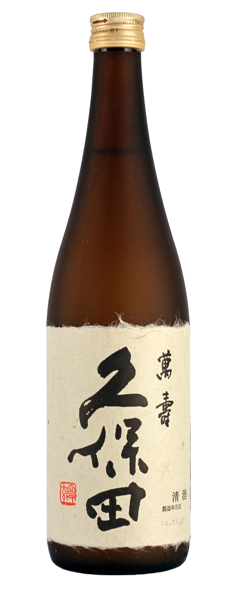
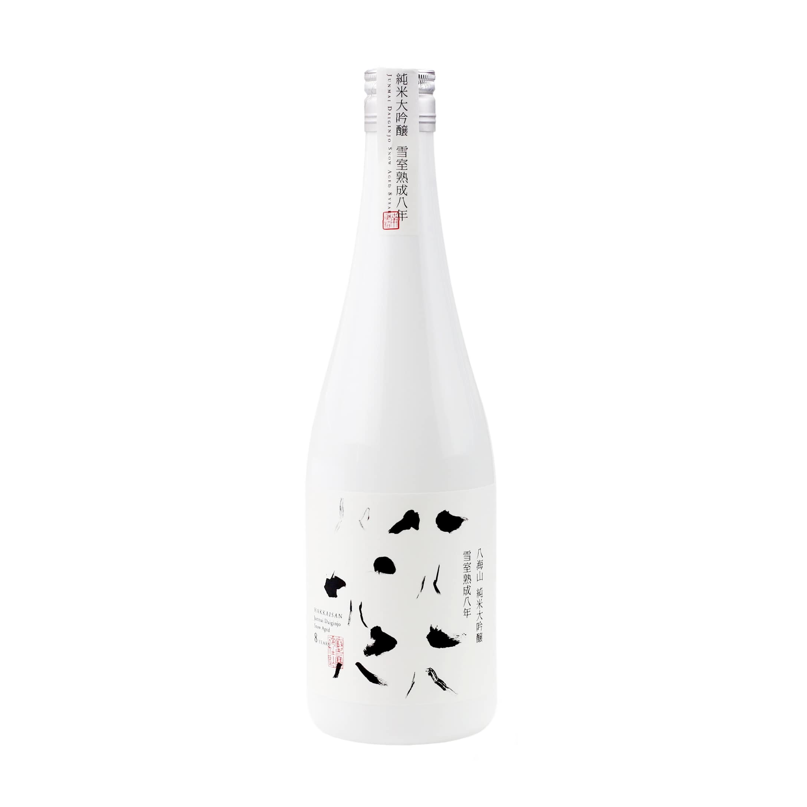
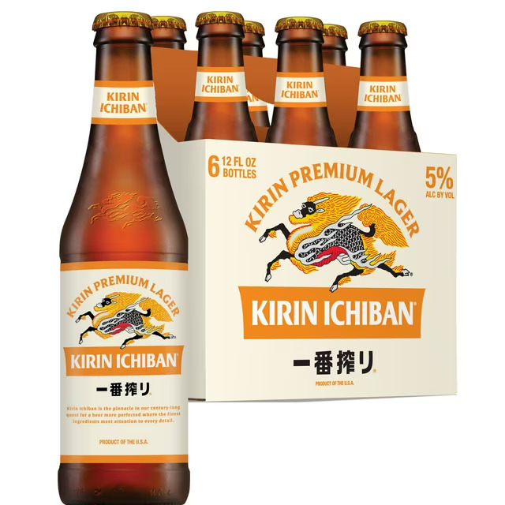

Sake & Beverage Selection
Sake From Japan

Dassai 45 Junmai Daiginjo
Chewy, full-bodied sake with honeydew aromas and muscat sweetness balanced by crisp dryness.
OriginYamaguchi, Japan
Rice Polishing Ratio45%
SMV+3
Acidity1.4
Serving TempChilled
$70 (720ml)| $35 (300ml)(out of stock)

Dassai 39 Junmai Daiginjo
Soft, elegant aromas of melon, peach, and white flowers. Smooth silky texture, clean finish.
OriginYamaguchi, Japan
Rice Polishing Ratio39%
Alcohol Content16%
SMV+3
Acidity1.3
Serving TempChilled
$105 (720ml) | $48 (300ml)

Dassai 23 Junmai Daiginjo (300ml)
Ultra-premium sake polished to 23%. Silky, elegant, floral, clean lingering finish.
OriginYamaguchi, Japan
Rice Polishing Ratio23%
Alcohol Content16%
SMV+4
Acidity1.3
Serving TempChilled
$75 (300ml)

Kubota Junmai Daiginjo
Refined sake with delicate pear and apple notes. Light, clean, refreshing.
OriginNiigata, Japan
Rice Polishing Ratio50%
SMV+2
Acidity1.3
Serving TempChilled
$78 (720ml) | $38 (300ml)

Kubota Manjyu Junmai Daiginjo
Elegant and refined. Melon and pear aromas, smooth silky body, pristine finish.
OriginNiigata, Japan
Rice Polishing Ratio50%
Alcohol Content15%
SMV+2
Acidity1.2
Serving TempChilled
$145 (720ml)

Hakkaisan 45 Junmai Daiginjo
Delicate steamed rice aroma with a gentle floral note and pristine dry finish.
OriginNiigata, Japan
Rice Polishing Ratio45%
Alcohol Content16%
SMV+5
Acidity1.2
Serving TempChilled
$89 (720ml) | $42 (300ml)

Hakkaisan Yukimuro Snow Aged 8 Years
Rare sake aged eight years in snow. Deep umami, velvety smooth texture, elegant finish.
OriginNiigata, Japan
Rice Polishing Ratio40%
Alcohol Content17%
Aging8 Years
Serving TempChilled
$230 (720ml)

Nihon Sakari Yuzu
Bright, citrusy yuzu sake with a sweet-tart refreshing finish.
OriginHyogo, Japan
TypeYuzushu
Alcohol Content10%
Serving TempChilled / Rocks
$76 (700ml) | $32 (300ml)
Beer

Sapporo Premium Beer (12 Oz)
Crisp, refined lager with a clean finish.
OriginUSA
ABV4.9%
Calories140
Carbs10.3g
$8

Kirin Ichiban Premium Beer (12 Oz)
Smooth, clean lager brewed using a first-press method.
OriginUSA
ABV5.0%
Calories145
Carbs10g
$10
Beverages

Saratoga Sparkling Water (12 Oz)
Premium sparkling water with crisp fine bubbles.
OriginSaratoga Springs, USA
Since1872
$5.5

Hot Green Tea
Traditional Japanese green tea with fresh grassy flavor.
OriginJapan
TypeSencha
Serving TempHot
$4